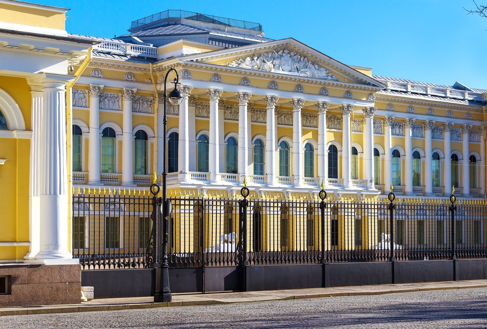
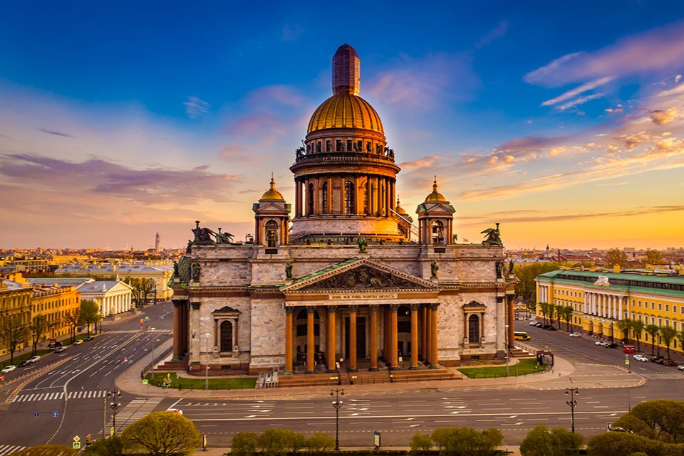

Михайловский дворец

Исаакиевский собор
| Петровское барокко | Высокое барокко | Классицизм | Эклектика | Модерн |
Михайловский дворец
Исаакиевский собор
Ампир, являвшийся высшей стадией развития русского классицизма, был востребован на новом историческом этапе развития страны и Петербурга: Он был нужен для прославления государственного могущества России, для выражения патриотических чувств. Архитектура крупных общественных зданий (а также дворцов, усадеб, домов, павильонов) была подчеркнуто парадной и монументальной. Композиции зданий строго симметричны, торжественны. Наряду с лаконичностью форм отмечается проявление милитаристской символики Древнего мира: изображения доспехов, лавровых венков, орлов. Важной характерной чертой ампира было взаимодействие зодчества с монументальной скульптурой. Это взаимодействие раскрывало и конкретизировало идейно-образное содержание сооружения.
Ампир — по-французски империя — все та же классическая ордерная система, но чуть более выразительная по пропорциям и соотношениям элементов, с чуть более напряженно нарисованными профилями архитектурных деталей: полочки, гуськи, каблучки карнизов, эхины и валюты капителей ит.д. Замечательным представителем стиля ампир был А.Н. Воронихин (1759—1814).
В ампире, внешне очень похожем на классицизм конца ХУШ века, ощущалась сила индивидуальности, некая мужественность. Но, главное: классическая ордерная система в ампире была органично совмещена с монументальной и объемной, барельефной, и фигурной, разнообразно орнаментальной, но всегда парадно-величавой и строгой. Синтез архитектуры и скульптуры достиг в этот период высокого уровня.
Ампир продемонстрировал синтез двух видов искусств. Совместно с плеядой выдающихся зодчих в создании замечательных архитектурных творений участвовали видные скульпторы. В. некоторых случаях (храмовые сооружения) можно говорить о синтезе трех искусств.

Нарвские ворота
Здание Сената и Синода